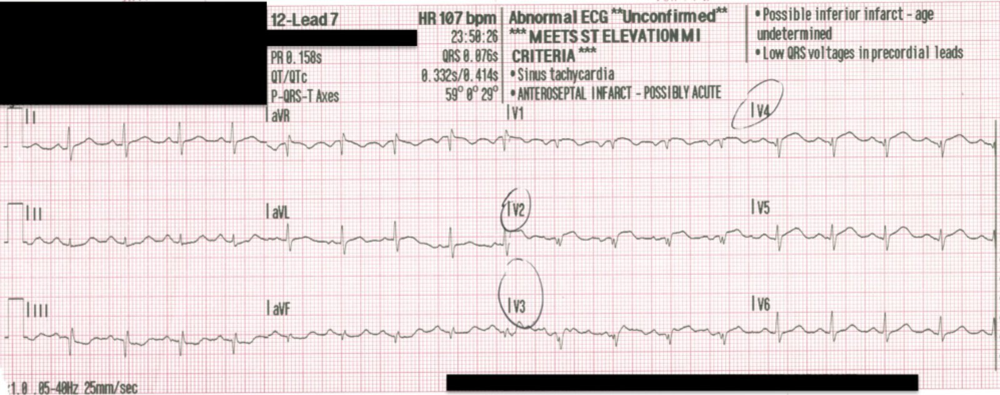
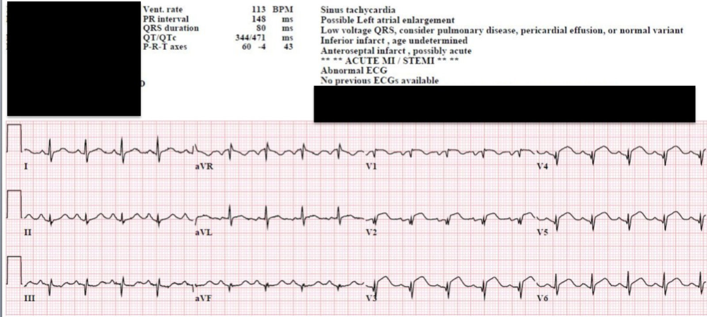
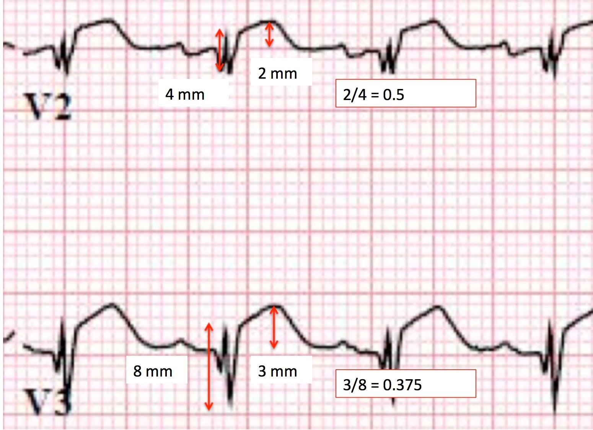
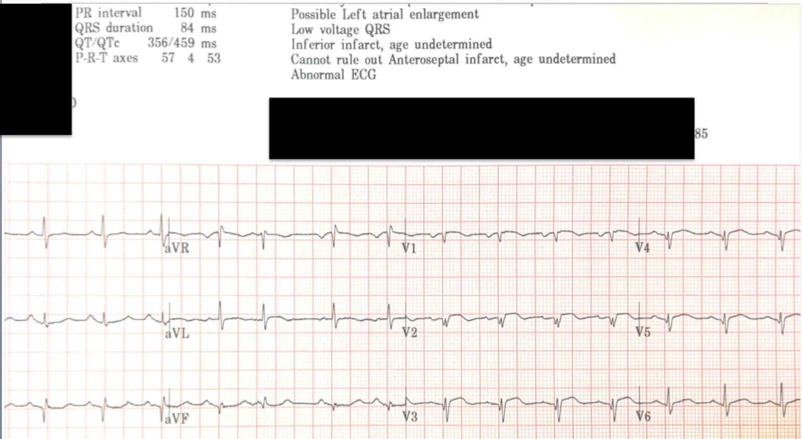
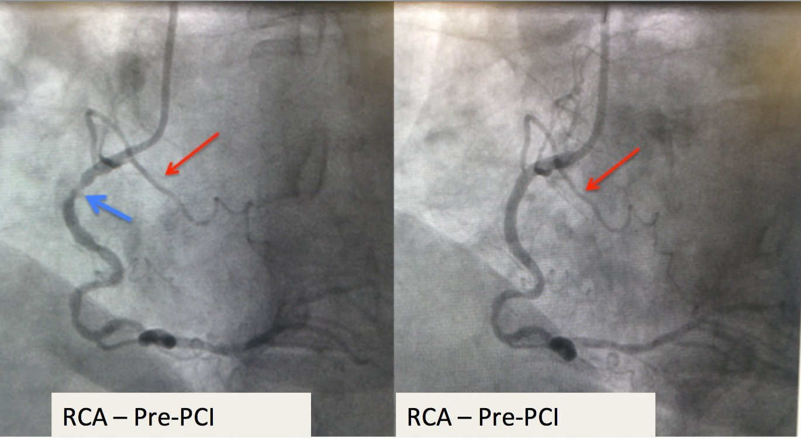
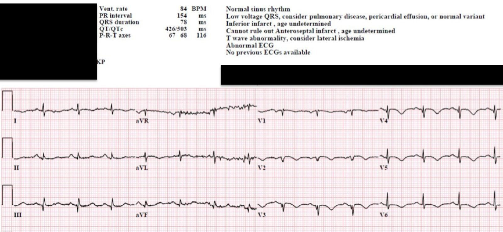
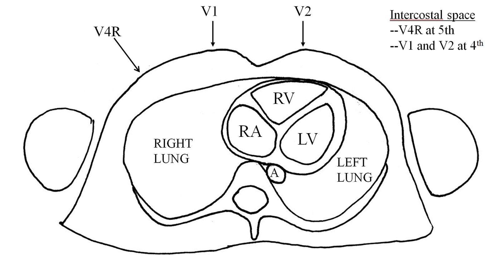

25/10/2015 — STEMI trước-bên? Nhồi máu cơ tim thành trước cũ? Nhưng thông tim cho thấy hẹp do huyết khối ở RCA.
Bản dịch tiếng Việt của bài "Anterorlateral STEMI? Old Anterior MI? But cath shows RCA thrombotic stenosis." – Dr. Smith’s ECG Blog. Giữ nguyên toàn bộ 7 hình ảnh và 1 video của bản gốc.
Ca này do một người đóng góp thường xuyên, Brooks Walsh, gửi đến. Có bổ sung và biên tập của tôi.
Một người đàn ông 68 tuổi bị khó chịu ở ngực từng cơn trong 2 tuần qua. Khoảng 18 giờ trước khi đến viện, cơn đau của ông
bắt đầu nặng lên. Ông bị buồn nôn, và số 911 đã được gọi sau khi ông nôn một lần.
Đội cấp cứu ngoài viện (EMS) ghi một điện tâm đồ:


ST chênh lên ở V2 – V5, kèm sóng Q ở V2 – V4. Hình ảnh này gần như chẩn đoán được nhồi máu cơ tim thành trước.
Nó là cấp? bán cấp? Hay nhồi máu cơ tim cũ với ST chênh lên dai dẳng?
EMS đề nghị kích hoạt phòng thông tim (cath lab). Bệnh nhân được cho dùng
nitroglycerin 3 lần, và cảm giác khó chịu của ông hết hoàn toàn trước khi đến
khoa cấp cứu (ED). Điện tâm đồ được ghi lại vào thời điểm đó:


ngoài ra không có thay đổi đáng kể.
Đây là đoạn ST chênh lên cấp tính haymạn tính?
Bên tim mạch đã nêu lo ngại rằng, xét thời gian kéo dài của
triệu chứng, cũng như các sóng Q ở thành trước, các thay đổi điện tâm đồ có thể phản ánh một hình ảnh
mạn tính của ST chênh lên (STE) dai dẳng
sau nhồi máu cơ tim trước đó; còn gọi là “phình
thất trái” (LVA). Họ nhấn mạnh rằng chụp mạch vành cấp cứu cho một NSTEMI có thể không
có lợi cho một bệnh nhân cao tuổi. Hoàn toàn đúng!
Tuy nhiên, có những yếu tố trên điện tâm đồ gợi ý rằng,
ngay cả khi bệnh nhân thực sự có nhồi máu cơ tim thành trước cũ, bệnh nhân cũng nhiều khả năng có thêm các đặc điểm chồng lên của một STEMI thành trước cấp.
Thứ nhất:
Cụ thể, các sóng T ở thành trước tương đối cao,
so với các phức bộ QRS. Ở cả V2 và V3, chúng ta thấy chiều cao sóng T vượt quá 36% của tổng biên độ QRS.
Các kết quả gần đây của Klein và cs. gợi ý mạnh mẽ rằng
điều này cho thấy STEMI thành trước cấp, ngay cả khi có cái gọi là LVA.


Vì vậy, bản thân sóng QR không thể chứng minh một biểu hiện bán cấp hay
mạn tính.
Thứ hai:
Có ST chênh lên tăng dần trên điện tâm đồ thứ 2. Điều này chỉ có thể xảy ra trong STEMI cấp.
Do đó: chẩn đoán là một trong các khả năng sau:
1. STEMI cấp kèm sóng Q sớm
2. STEMI bán cấp (tắc kéo dài với sự hình thành sóng Q), hoặc
3. nhồi máu cơ tim thành trước cũ có STEMI cấp chồng lên
Diễn biến lâm sàng:
Trong lúc chờ kíp phòng thông tim, một điện tâm đồ thứ hai được ghi:


thành dưới. Sóng T đảo ngược mới xuất hiện ở các chuyển đạo I và aVL nay gợi ý rằng các điện tâm đồ trước đó đã cho thấy đoạn ST
“thẳng đuỗn” (straightening) và sóng T tối cấp ở các chuyển đạo này. Những thay đổi
động này ủng hộ tắc cấp ảnh hưởng đến thành trước, có thể kèm tái tưới máu
tự phát.
Bác sĩ nội trú cấp cứu đã làm siêu âm tim tại giường:
Có rối loạn vận động
thành trước, với giảm động/vô động nặng, nhưng không có loạn động
hay phình rõ ràng. Không có rối loạn vận động thành (WMA) ở thành dưới, hoặc chỉ ở mức nhẹ.
Chỉ có một lần đo troponin I (Ortho clinical diagnostics) trước PCI: 1.4 ng/ml (0.034
ng/ml là ngưỡng bách phân vị 99th)
Chụp mạch vành và PCI
Khi chụp mạch vành, phát hiện tổn thương 100% ở LAD ngay tại chỗ xuất phát
từ thân chung (LM). Tuy nhiên, tổn thương này có nhiều
nốt vôi hóa, và khá khó để đưa dây dẫn qua; bác sĩ can thiệp cho rằng tổn thương này
là mạn tính.
Ngược lại, RCA ưu thế có chỗ tắc 90% ở đoạn gần,
nhưng có vẻ là cấp tính.


= tổn thương). Lưu ý rằng nhánh thất phải (RV) (mũi tên đỏ) vẫn thông.
Cả tổn thương LAD và RCA đều được đặt stent.
Kết quả sau PCI:
Một điện tâm đồ sau thông tim đã được ghi.


Sóng T đảo ngược thấy ở các chuyển đạo I, aVL và V2-V6, phù hợp với
thành trước đã được tái tưới máu.
Siêu âm tim sau thông tim cho thấy giảm động nặng ở các
đoạn vách xa, thành trước và trước-bên, trong khi thất phải có chức năng tâm thu
bình thường.
Tất cả điều này phù hợp với STEMI thành trước thất trái.
Bạn giải thích thế nào về các dấu hiệu trên điện tâm đồ và siêu âm tim bằng một tổn thương huyết khối hẹp 90% ở RCA?
STEMI thành trước – Nhưng làthành trước nào?
Hãy nhớ rằng các chuyển đạo trước tim bên phải thực ra đang
“nhìn” vào HAI thành trước – dĩ nhiên là thành trước của thất trái, nhưng còn có
thành trước của thất phải.


cho ST chênh lên ở thành trước và sự đảo ngược
Nhánh thất phải củaRCA?
Cách giải thích thứ nhất là nhánh thất phải
của RCA đã bị tắc thoáng qua. Nhiều báo cáo ca bệnh đã
cho thấy tắc nhánh thất phải (dù là do tắc một
RCA không ưu thế1,2,3,4, tắc đơn độc nhánh thất
phải5, hay tắc nhánh thất phải do thầy thuốc gây ra – một tình huống
phổ biến đến bất ngờ!6,7,8,9,10) có thể gây ST chênh lên thành trước mà không có ST chênh lên thành dưới. Trong những ca nhồi máu thất phải (RV MI) đơn độc này,
ST chênh lên thành trước được tạo ra bởi thất phải phía trước bị thiếu máu cục bộ, chứ không phải bởi thành trước vách của thất trái. Vì nhánh thất phải không
cấp máu cho thành dưới của thất trái, nên sẽ không dự kiến thấy ST chênh lên ở các chuyển đạo thành dưới.
Tuy nhiên, siêu âm tim tại giường, cũng như siêu âm tim
toàn diện sau PCI, không cho thấy bất kỳ tình trạng giãn hay rối loạn chức năng thất phải nào, khiến ngay cả
một nhồi máu thất phải thoáng qua cũng khó xảy ra. Dù triệu chứng và điện tâm đồ đã cải thiện
tự phát trước PCI, việc chức năng thất phải hồi phục nhanh và hoàn toàn như vậy
là điều bất thường, ngay cả sau một lần tắc thoáng qua!
Quan trọng hơn, tắc nhánh thất phải sẽ không gây ST chênh lên hay sóng T đảo ngược ở aVL. Cuối cùng, nhồi máu thất phải đơn độc
thường gây ST chênh lên tối đa ở các chuyển đạo bên phải
V1 và V2, trong khi mức chênh lên tối đa ở đây lệch nhiều hơn về phía bên, ở V3-V5.
Tắc gần hoàn toàn RCAđã gây nhồi máu cơ tim thành trước cấp trên nền cũ?
Với tình trạng tắc hoàn toàn LAD từ trước, làm sao thành trước
lại có thể bị một nhồi máu “mới”? Có lẽ thành trước đang được tưới máu bởi RCA, thông qua tuần hoàn bàng hệ. Sau khi RCA bị tắc gần hoàn toàn cấp tính, dòng chảy đến
thành dưới có thể vẫn đủ để ngăn nhồi máu
thành dưới thất trái. Tuy nhiên, dòng chảy đến
thành trước qua tuần hoàn bàng hệ có thể đã giảm
mạnh, đến mức thành trước trở nên thiếu máu cục bộ cấp.
Về thực chất, điều này sẽ tạo ra một STEMI thành trước cấp (do tắc 90% RCA) chồng lên
nhồi máu cơ tim thành trước cũ (do tắc
LAD). Điều này phù hợp với các điện tâm đồ (ST chênh lên cấp ở thành trước và
bên cao, sau đó là sóng T đảo ngược (TWI) ở chính các chuyển đạo đó), và với các lần siêu âm tim (rối loạn
vận động thành giới hạn ở thành trước), gần như loại trừ hội chứng vành cấp (ACS) thành dưới
hoặc thành bên.
Cách giải thích của chúng tôi: Mọi dấu hiệu đều được giải thích bởi sự hiện diện của một nhồi máu cơ tim trước-bên cũ, vùng này nay chỉ còn được cấp máu bởi tuần hoàn bàng hệ từ RCA. Một chỗ tắc 90% ở RCA vẫn đủ để tưới máu thành dưới, nhưng không đủ để vươn tới thành trước và thành bên vốn do LAD cấp máu.
Nếu không xem chi tiết video chụp mạch vành thì không thể kiểm chứng giả thuyết này. Chúng tôi đã không làm việc đó.
1. Porter
A, Herz I, Strasberg B. Isolated right ventricular infarction presenting as
anterior wall myocardial infarction on electrocardiography. [Nhồi máu thất phải đơn độc biểu hiện như nhồi máu cơ tim thành trước trên điện tâm đồ.] Clin Cardiol.
1997;20(11):971-973. doi:10.1002/clc.4960201115.
2. Hsu P-C, Lin T-H, Su H-M, Lu Y-H, Lai
W-T, Sheu S-H. Unexpected anterolateral ST elevation after cardiopulmonary
resuscitation in a patient with right coronary artery occlusion. [ST chênh lên trước-bên bất ngờ sau hồi sinh tim phổi ở một bệnh nhân tắc động mạch vành phải.] Resuscitation.
2009;80(6):713-714. doi:10.1016/j.resuscitation.2009.03.011.
3. Logeart D, Himbert D, Cohen-Solal A.
St-segment elevation in precordial leads* : Anterior or right ventricular
myocardial infarction? [ST chênh lên ở các chuyển đạo trước tim: nhồi máu cơ tim thành trước hay thất phải?] Chest. 2001;119(1):290-292.
doi:10.1378/chest.119.1.290.
4. Muhammad KI, Kapadia SR. Anterior
ST-Segment Elevation With Right Coronary Artery Occlusion: A Unique Case of
Isolated Right Ventricular Infarction. [ST chênh lên thành trước kèm tắc động mạch vành phải: một ca nhồi máu thất phải đơn độc đặc biệt.] Angiology. 2008;59(5):622-624.
doi:10.1177/0003319707305464.
5. Turkoglu S, Erden M, Ozdemir M. Isolated
right ventricular infarction due to occlusion of the right ventricular branch
in the absence of percutaneous coronary intervention. [Nhồi máu thất phải đơn độc do tắc nhánh thất phải khi không có can thiệp mạch vành qua da.] Can J Cardiol.
2008;24(10):793-794.
6. Acikel M, Yilmaz M, Bozkurt E, Gürlertop
Y, Köse N. ST segment elevation in leads V1 to V3 due to isolated right
ventricular branch occlusion during primary right coronary angioplasty. [ST chênh lên ở các chuyển đạo V1 đến V3 do tắc đơn độc nhánh thất phải trong lúc nong bóng tiên phát động mạch vành phải.] Catheter
Cardiovasc Interv. 2003;60(1):32-35. doi:10.1002/ccd.10610.
7. Hilliard AA, Nkomo VT, Mathew V, Prasad
A. Isolated right ventricular infarction — An uncommon cause of acute anterior
ST segment elevation. [Nhồi máu thất phải đơn độc — một nguyên nhân hiếm gặp của ST chênh lên thành trước cấp.] Int J Cardiol. 2009;132(2):e51-e53.
doi:10.1016/j.ijcard.2007.08.017.
8. Kocaman SA, Uğurlu Y, Ergül E, Bozkurt
E. Prominent ST-segment elevation in leads V1–V4 due to isolated right
ventricular branch occlusion after primary percutaneous coronary intervention
for right coronary artery. [ST chênh lên rõ rệt ở các chuyển đạo V1–V4 do tắc đơn độc nhánh thất phải sau PCI tiên phát động mạch vành phải.] J Cardiol Cases. 2010;2(3):e135-e138.
doi:10.1016/j.jccase.2010.05.008.
9. Koh TW, Coghlan JG, Lipkin DP. Anterior
ST segment elevation due to isolated right ventricular infarction during right
coronary angioplasty. [ST chênh lên thành trước do nhồi máu thất phải đơn độc trong lúc nong bóng động mạch vành phải.] Int J Cardiol. 1996;54(3):201-206.
doi:10.1016/0167-5273(96)02610-1.
10. Bolt CLB van der, Vermeersch PHMJ, Plokker
HWM. Isolated acute occlusion of a large right ventricular branch of the right
coronary artery following coronary balloon angioplasty. [Tắc cấp đơn độc một nhánh thất phải lớn của động mạch vành phải sau nong bóng mạch vành.] Eur Heart J.
1996;17(2):247-250.